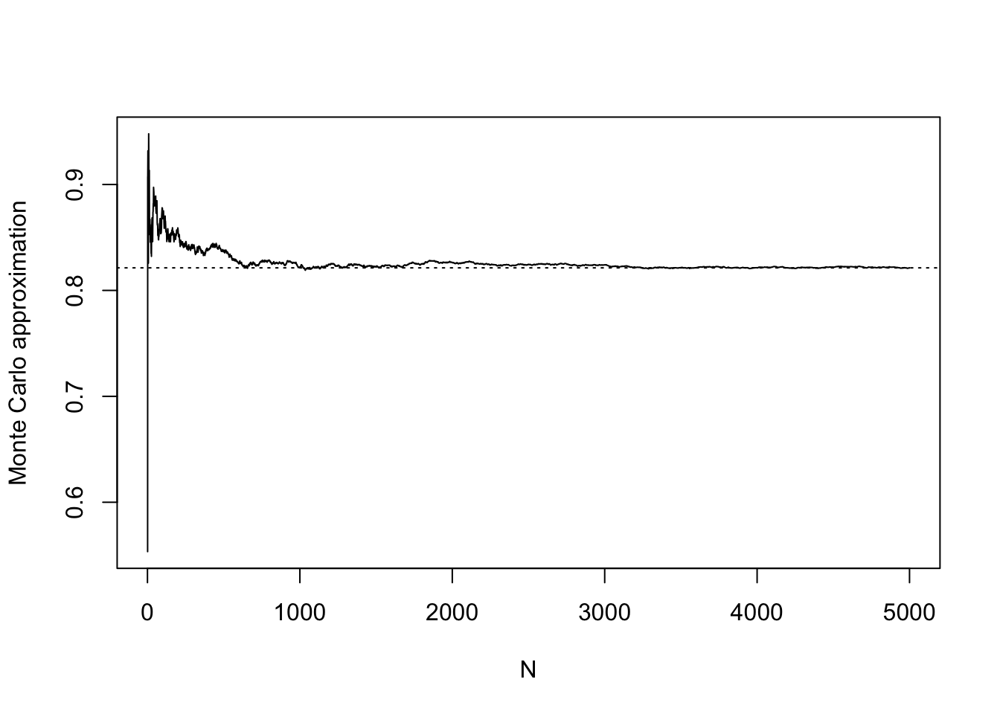
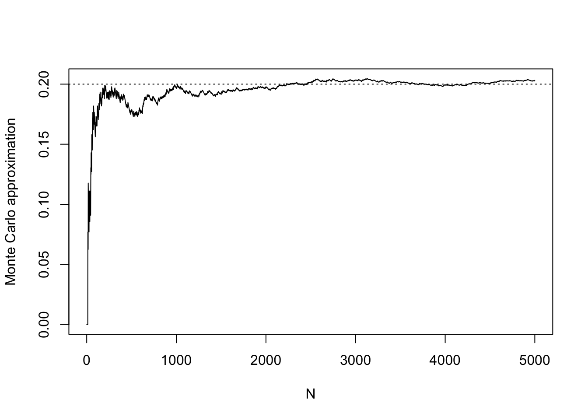
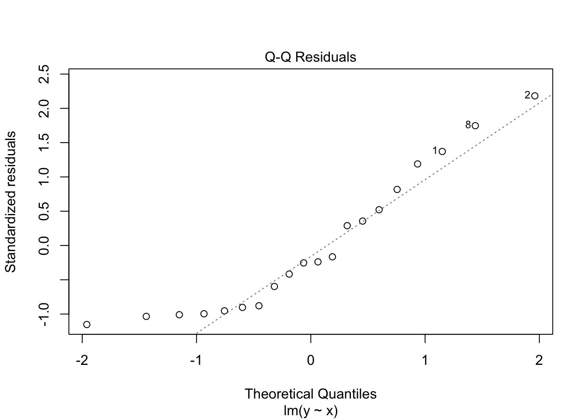

N <- 5000
X <- rnorm(N) # mu = 0 and sd = 1 by default
gX <- sqrt(abs(X))
mgX <- mean(gX)
mgX[1] 0.8213095$$
$$
Statisticians have special uses for the Monte Carlo methods introduced in the previous note. Very often statisticians run computer experiments to check how well a statistical method performs. This is particularly important when a statistical method, say a test of hypotheses or the construction of a confidence interval, depends on asymptotic results established under the assumption that the sample size \(n\) approaches infinity. You may recall the central limit theorem, which tells us that a sample mean, centered and then divided by its standard deviation, will have a distribution approaching the standard normal distribution as the sample size is increased to infinity. It is upon such results that so many statistical methods are based; but in practice, it is impossible to observe an infinite sample size. It therefore becomes important to know how large a sample size is large enough for asymptotic distribution theory to “kick in” and ensure that our methods have the advertized properties—Type I error rates of tests and coverage probabilities for confidence intervals, for example.
These computer experiments are essentially Monte Carlo approximations to integrals, not so different from those we studied in the previous note.
The Monte Carlo method for approximating an integral can be used to approximation an expected value, which is useful when this is difficult to compute exactly. Recall that for a random variable \(X\), the expected value, denoted \(\mathbb{E}X\) represents the central value of the distribution of \(X\) in the sense that if one were to observe many realizations of \(X\) and average them, this average should be close to \(\mathbb{E}X\). So we think of \(\mathbb{E}X\) as the theoretical mean of \(X\), that is the mean we would obtain if we could observe \(X\) an infinite number of times.
For example, if \(X \sim \text{Normal}(\mu,\sigma^2)\) for some \(\mu \in \mathbb{R}\) and \(\sigma^2 >0\), then \(\mathbb{E}X = \mu\). For another example, if \(X \sim \text{Binomial}(n,p)\) for some number of Bernoulli trials \(n \geq 1\) and some success probability \(p \in (0,1)\), then \(\mathbb{E}X = np\).
In these two examples, formulas are available for obtaining \(\mathbb{E}X\), but this may not always be the case, especially if one is interested in the expected value of some transformed version of \(X\), say \(g(X)\). It may be quite difficult to obtain a formula giving an expression for \(\mathbb{E}g(X)\), depending on the particular function \(g\). For example, if \(X \sim \text{Normal}(\mu,\sigma^2)\), there are no no simple formulas giving \(\mathbb{E}\sin(X)\) or \(\mathbb{E}\sqrt{|X|}\). In such cases, it may be sufficient to obtain a Monte Carlo approximation to the expected value as an alternative to working out how to compute the exact value.
Here is how Monte Carlo simulation works: It is based on a result in probability theory called the Strong Law of Large Numbers, which says that as you draw a larger and larger number of realizations of a random variable, the average of these realizations will approach the expected value of the random variable. To leverage this result, the Monte Carlo strategy for constructing an approximation to the expected value of a random variable \(X\) is to generate a large number \(N\) of realization of \(X\), say \(X_1,\dots,X_N\) and then use the average \(N^{-1}\sum_{i=1}^NX_i\) as an approximation to \(\mathbb{E}X\). Similarly, to obtain an approximation to \(\mathbb{E}g(X)\), where \(g\) is some function transforming the values of \(X\), one uses the average \(N^{-1}\sum_{i=1}^Ng(X_i)\).
Suppose we want to find \(\mathbb{E}\sqrt{|X|}\), where \(X \sim \text{Normal}(0,1)\). The code below runs a Monte Carlo simulation to obtain an approximation to \(\mathbb{E}\sqrt{|X|}\).
N <- 5000
X <- rnorm(N) # mu = 0 and sd = 1 by default
gX <- sqrt(abs(X))
mgX <- mean(gX)
mgX[1] 0.8213095Try running this several times with smaller and larger choice of \(N\). You’ll notice that the result becomes more stable for larger values of \(N\).
It is sometimes interesting, having generated \(X_1,\dots,X_N\), to make a plot of the sequence of Monte Carlo approximations \[
\frac{1}{i}(g(X_1) + \dots + g(X_i)), \quad i = 1,\dots, N.
\] We can see in the plot below that the approximation in the beginning (when we are averaging just a very small number of realizations) is very erratic and unreliable. However, the approximation becomes more stable as we include more realizations. The code below uses the cumsum() function, which takes a cumulative sum of a numeric vector. Run ?cumsum() to learn how it works.
mgX_seq <- cumsum(gX)/c(1:N)
plot(mgX_seq,
type="l",
ylab = "Monte Carlo approximation",
xlab = "N")
abline(h = mgX,lty = 3)
We quite often use Monte Carlo simulation when our random variable \(X\) is a Bernoulli random variable with an unknown success probability \(p\). Recalling how to compute the expected value for discrete random variables, we see that for \(X \sim \text{Bernoulli}(p)\), we have \[ \mathbb{E}X = 1 \cdot \mathbb{P}(X = 1) + 0 \cdot \mathbb{P}(X = 0) = p, \] so the expected value \(\mathbb{E}X\) is the same as the probability \(\mathbb{P}(X = 1) = p\).
But in what kind of situation will we not know the success probability \(p\)? We will come to such a case in a moment, but first, as an exercise, let’s see how a Monte Carlo simulation would look for approximating the expected value, i.e. the success probability of a Bernoulli random variable when this is known:
p <- 0.2 # suppose this is the value of p, but that it is unknown to us
N <- 5000
X <- rbinom(N,1,p)
mX <- mean(X)
mX[1] 0.2032# make a plot
mX_seq <- cumsum(X)/c(1:N)
plot(mX_seq,
type="l",
ylab = "Monte Carlo approximation",
xlab = "N")
abline(h = p,lty = 3) # horizontal line at the true p
We notice, as we did in the first example, that the Monte Carlo approximation improves as the number of realizations on which it is based increases.
Now, how about a setting in which the true success probability \(p\) is unknown to us? A very common application of Monte Carlo simulation is to evaluate the performance of confidence intervals or statistical tests advertised to guarantee a certain coverage probability or type I error rate. One can construct the confidence interval or run the test on a large number of simulated data sets in order to obtain a Monte Carlo approximation to the probability that the confidence interval will cover its target or that the test will reject its null hypothesis.
First consider assessing the coverage performance of a confidence interval. Suppose one is to observe a random sample \(Y_1,\dots,Y_n\) from some distribution having unknown mean \(\mu\) and some finite variance, and one decides to construct a confidence interval for \(\mu\) as \[ \bar Y_n \pm t_{n-1,\alpha/2}\frac{S_n}{\sqrt{n}}, \] where \(\bar Y_n = n^{-1}(Y_1+\dots+Y_n)\), \(S_n^2 = (n-1)^{-1}\sum_{i=1}^n(Y_i - \bar Y_n)^2\), and \(t_{n-1,\alpha/2}\) is the upper \(\alpha/2\) quantile of the \(t\) distribution with degrees of freedom \(n-1\), where \(\alpha \in (0,1)\). This is the classical “\(t\)-interval”, and it is guaranteed to capture the true mean with probability exactly \(1-\alpha\) provided \(Y_1,\dots,Y_n\) is a random sample from a population with a Normal distribution. However, if the population distribution is not Normal, this interval will not have exactly the advertised coverage probability of \(1-\alpha\) (though one expects that its coverage probability will approach \(1-\alpha\) as \(n\) increases, because of the central limit theorem). To get an approximation to the probability with which this interval will cover its target when the population distribution is not normal, one can run a Monte Carlo simulation. Indeed, it is quite difficult to investigate the performance of this interval in any other way when the population is non-normal!
Here is how we can think about it: Let \(X\) be a variable taking the value \(1\) if the confidence interval covers its target and taking the value zero if the interval misses. Then \(X\) is a Bernoulli random variable with unknown success probability \(p\). Equipped with the knowledge of the for loop, we can run a Monte Carlo simulation to obtain an approximation to the coverage probability of the interval when the sample \(Y_1,\dots,Y_n\) is drawn from some distribution other than a Normal distribution—and for any sample size \(n\).
Let’s suppose \(Y_1,\dots,Y_n\) are drawn from the \(\text{Exponential}(\lambda)\) distribution, so that \(\mathbb{E}Y = 1/\lambda\) (see my STAT 515 lecture on this here). Here we go:
n <- 10 # set the sample size n
lambda <- 1/2 # use parameterization of exponential such that it has expected value 1/lambda
mu <- 1/lambda # the population mean targeted by the confidence interval
alpha <- 0.05 # set alpha to 0.05 to get a 95% confidence interval
t_val <- qt(1 - alpha/2,n-1) # retrieve the t-quantile
N <- 5000 # set the number of Monte Carlo realizations to generate
X <- numeric(N) # create an empty vector to populate with 0 or 1
for(i in 1:N){
Y <- rexp(n,lambda) # draw sample of size n from exponential distribution
Ybar <- mean(Y)
Sn <- sd(Y)
lo <- Ybar - t_val * Sn / sqrt(n)
up <- Ybar + t_val * Sn / sqrt(n)
X[i] <- (lo < mu) & (up > mu) # check if confidence interval contains mu
}
mean(X)[1] 0.9028In the Monte Carlo simulation, the confidence interval \(\bar Y_n \pm t_{n-1,\alpha/2}S_n/\sqrt{n}\) contained the true mean \(90.28\%\) of the time.
Now let’s consider using Monte Carlo simulation to obtain the Type I error rate of a statistical test when the assumptions required for the test do not hold. Recall that the Type I error rate of a test is the probability that it rejects the null hypothesis when this is true. As an example of a test, let’s use the \(F\) test for equality of means in a one-way ANOVA experiment (for a refresher on this, see my STAT 515 notes here). Suppose we have \(K\) treatment groups with \(n\) subjects per treatment group and let \(Y_{ij}\) denote the response observed on subject \(j\) of treatment group \(i\). One typically assumes the model \[ Y_{ij} = \mu_i + \varepsilon_{ij}, \quad i = 1,\dots,K, \quad j = 1,\dots,n, \] where the \(\mu_i\) are treatment group means and the \(\varepsilon_{ij}\) are independent error terms with the \(\text{Normal}(0,\sigma^2)\) distribution for some unknown \(\sigma^2 > 0\). The \(F\) test rejects the equal-means hypothesis \[ H_0\text{:} ~ \mu_1 = \dots = \mu_K \] at significance level \(\alpha \in (0,1)\) if \[ F = \frac{\operatorname{MS}_{\operatorname{Treatment}}}{\operatorname{MS}_{\operatorname{Error}}} > F_{K-1,K(n-1),\alpha}, \] where \(F_{K-1,K(n-1),\alpha}\) is the upper \(\alpha\) quantile of the \(F\) distribution with numerator degrees of freedom \(K-1\) and denominator degrees of freedom \(K(n-1)\).
Now, the above test is calibrated such that when \(H_0\) is true, it will still reject this hypothesis with probability \(\alpha\). However, the calibration of the test depends on the assumption that the responses \(Y_{ij}\) are normally distribution around the treatment group means. If this is not the case, there is no guarantee that the test will maintain the its advertised Type I error rate.
Below is a Monte Carlo simulation designed to obtain an approximation to the Type I error rate of the one-way ANOVA F-test when the error terms \(\varepsilon_{ij}\) do not have the normal distribution but rather a skewed distribution, namely the chi-squared distribution with degree of freedom 1, centered by subtracting 1 (if \(\varepsilon \sim \chi^2_1\) then \(\mathbb{E}\varepsilon = 1\)). The code makes use of the Kronecker product operator %x% for setting up the treatment vector and the lm() function for computing the F statistic.
K <- 3 # set number of treatment groups
n <- 3 # set number of subjects in each group
trt <- as.factor(c(1:K) %x% rep(1,n)) # construct trt column as a factor. Use kronecker product %x%
alpha <- 0.05
N <- 5000 # set number of Monte Carlo draws
X <- numeric(N) # create empty vector to populate with Bernoulli realizations
for(i in 1:N){
e <- rchisq(n*K,df=1)-1 # generate error terms from a chi-square 1 distribution (which is skewed) centered to have mean zero
Y <- e # draw Y such that the trt groups have all the same mean, so the null hypothesis will be true
lm_out <- lm(Y~trt) # use lm() function to run F test
sum_lm_out <- summary(lm_out) # dig out the F statistic
Fstat <- sum_lm_out$fstatistic[1]
pval <- 1 - pf(Fstat,K-1,K*(n-1)) # compute the p-value
X[i] <- pval < alpha # reject the null hypothesis if the p-value is less than alpha
}
mean(X) # the Type I error rate[1] 0.0364The Monte Carlo simulation approximated the Type I error rate of the test in this setup as 0.0364, somewhat lower than the nominal 0.05. We refer to 0.05 as the “nominal” size, because this is the advertised or “named” size of the test, whereas the test actually performs with a lower Type I error rate (not necessarily a good thing, because of the power/size trade-off), suggesting that the test is unduly conservative (overly reluctant to reject) in this setup.
Practice writing code and anticipating the output of code with the following exercises.
chisq.test() function to carry out the test). Record on what proportion of times out of the \(1000\) the null hypothesis is rejection; this is the Type I error rate.J <- 3 # number of rows
K <- 4 # number of columns
N <- 500 # number of subjects
U <- sample(1:J,N,prob = c(0.2,0.4,0.4),replace = T)
V <- sample(1:K,N,prob = c(0.4,0.1,0.2,0.3),replace = T)
O <- table(U,V)
O V
U 1 2 3 4
1 37 14 30 24
2 72 22 28 67
3 86 22 34 64lm() function to obtain a table of coefficient estimates which includes the p-value for testing \(H_0\): \(\beta_1 = 0\) versus \(H_1\): \(\beta_1 \neq 0\). Note that the non-normality of the error terms shows up in the normal Q-Q plot to a degree that we might say we cannot trust an analysis based on the assumption of normal error terms. However, asymptotic theory suggests that even when the error terms are not normally distributed, the least-squares regression coefficient estimators should still have approximately normal distributions if the sample size is large. To investigate this, run a simulation, generating many data sets (say 1000) exactly as below and obtain for each data set the p-value for testing whether the coefficient \(\beta_1\) is nonzero. Then record on what proportion of data sets the \(p\)-value fell below \(0.05\). Note that in the code below the true value of \(\beta_1\) is set to zero, so that the null hypothesis is true. The result of the simulation will therefore be an approximation to the actual Type I error rate of the test (remember that we reject \(H_0\) when the p-value is less than our significance level \(\alpha\), and the Type I error rate is the probability of falsely rejecting \(H_0\)). This simulation will tell us whether the non-normality of the error term distribution will cause our inferences to be invalid.n <- 20
df <- 2
b0 <- 1
b1 <- 0
x <- runif(n,0,5)
e <- (rchisq(n,df) - df)/sqrt(2*df) # scale to have zero mean and unit variance
y <- b0 + b1*x + e
out <- lm(y~x)
plot(out,which = 2)
summ_lm <- summary(out)
summ_lm$coefficients Estimate Std. Error t value Pr(>|t|)
(Intercept) 0.82787968 0.4465373 1.8539989 0.08020037
x 0.07756801 0.1621308 0.4784285 0.63810479